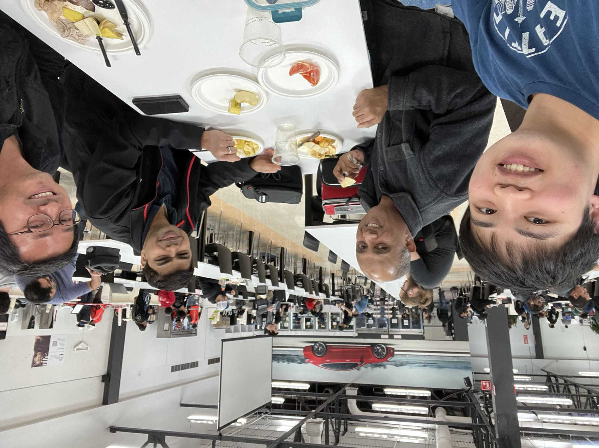
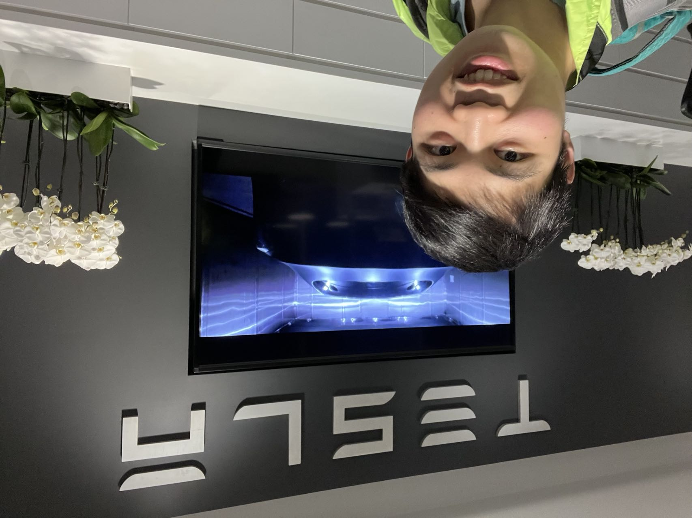
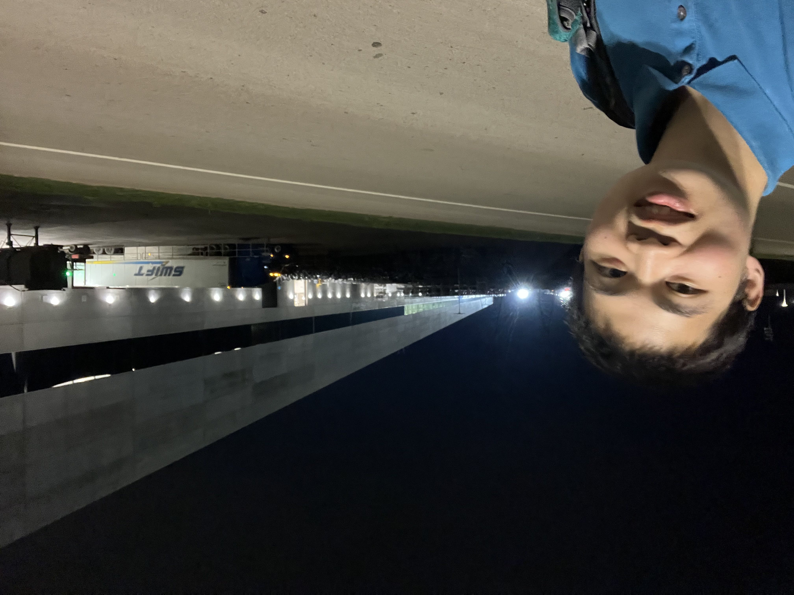
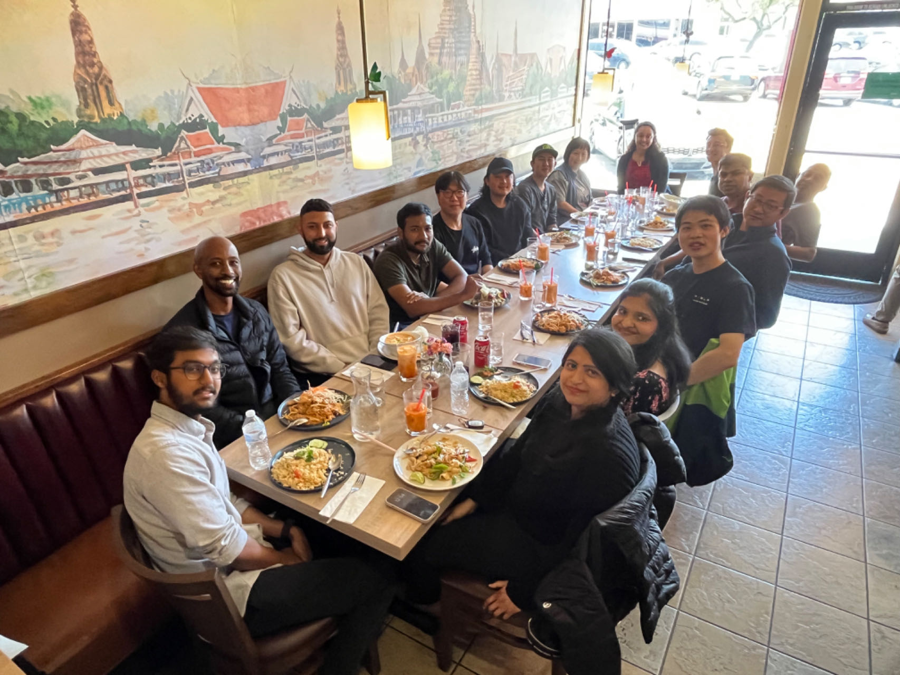

I'm grateful for being selected among 180 students from all over the world as a part of the inaugural Google Student Innovators program. Over the past three days, I attended the Google Cloud Next'23 conference at San Francisco's Moscone Center. During this event, I immersed myself in learning about the latest features of GCP, particularly its capabilities in enabling generative AI. I also had the fantastic opportunity to connect with fellow student leaders and industry professionals.
Thank you to Aaron Yeats and the entire Google team for this remarkable opportunity. Additionally, I want to express my special appreciation to the NC State EYE program for their financial support.
#StudentInnovators #GoogleCloudNext2023 #EngineerYourExperience #Google
As I begin my fourth week at Tesla, I'm filled with gratitude for the opportunity to intern with such an innovative company. A special thanks to my recruiter Giliat Ghebray, Steven Uyeda, and my manager Peter Fan for their support. The Factory Software team has been incredibly welcoming, always willing to help and answer my questions. These past few weeks, I have met many new friends, received my first several service tickets and submitted a couple pull requests, walked the factory line, and enjoyed cereal and the special Chinese New Year dumplings. Looking forward to the next few months and hoping to make the most of this invaluable experience! #TeslaInterns2023 #Growth #Learning #opportunity #tesla

Lunch with team in Powertrain Cafe

Tesla, Fremont

Tesla, Austin

Team lunch, May 2023
Education
Recently, I received a Google nest mini in the mail, which reminded me... I haven't posted about my experience at TreeHacks yet, Stanford's annual hackathon. Last month, I traveled across the bay to Stanford University, at the Huang Engineering Center, joining thousands of students from around the world to participate in this hackathon. With my teammates Heerraa Ravindran and Kenta Lin, we designed and built an application EdRevolve to connect educators and artists/innovators, bringing working professionals to the classroom as guest speakers and relating the classroom curriculum to the real world. We used Next.JS, a React framework, Convex, and Checkbook. I had a blast meeting brilliant minds, from fellow students to the keynote speaker Andrej Karpathy. I learned so much, attending sponsor workshops to use the APIs/frameworks, pitching in the YCombinator competition, and fighting in the lightsaber battle :). Thank you to the Stanford organizers who worked tirelessly and paid for travel/meals for the participants! Hope to return next year! Now back to the Google nest mini… we received them for winning the Checkbook sponsor prize by integrating their payments/invoice API into our application! #TreeHacks #Hackathon #Stanford #engineering #experience
During the 2015–16 N.B.A. season, Stephen Curry led the Golden State Warriors to a best-ever 73–9 regular-season record, before losing in dramatic fashion to the Cleveland Cavaliers in the Finals, and the tectonics of basketball style and strategy—not only in the N.B.A., but beyond—shifted for good. Curry regularly launched shots from spots closer to half-court than to the three-point line, forcing defenders to cover more ground, drawing them away from the basket, and leaving a more or less open lane ripe for the slashing. This offensive approach, with variations shaped by differences in personnel and degrees of boldness, has become nearly de rigueur across the league—winners beget imitators, every time—and has had a palpable effect on players’ entire careers.
Steph's wax figure
About Us
My name is Michael Dacanay, and I'm honored for your visit to my website. At North Carolina State University, I major in Computer Science and minor in Statistics and Business Entrepreneurship. In my free time, I try to make an effort and expand my skills, whether it be the latest interesting Cloud/AI/ML course on Coursera, or brushing up on my Chinese/Spanish fluency. I'm passionate about meeting like-minded people, from technology to entrepreneurship to public speaking.